High Performance Asynchronous Programming Framework
based on Linux Asynchronous I/O and Coroutine
Background of the Study
The Input/Output(I/O) operations in the traditional high-concurrency system:
- use Synchronous I/O
- Applications processing cannot continue until the I/O operation is completed.
- use Multithreading
- The cost of thread switching is very high.
Both of them lead to weak system throughput performance in high-concurrency scenarios.
Modern Solutions
Maybe we can improve this situation with two steps:
- replace Synchronous I/O with the Asynchronous I/O.
- utilize the Coroutine technology.
Asynchronous I/O vs Synchronous I/O
- Synchronous I/O operations block the thread until the I/O request has completed.
- Asynchronous I/O operations run in the background and do not block any thread.
Asynchronous I/O improves performance, because I/O operations and application processing can run simultaneously.
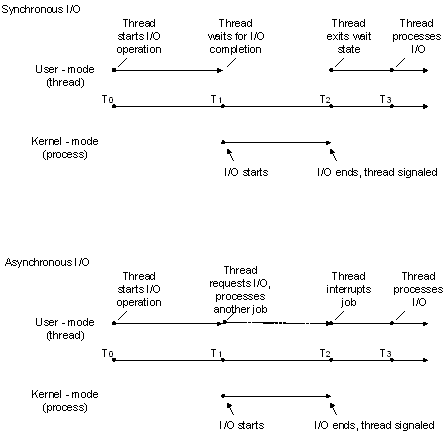
io_uring: Asynchronous I/O API for Linux
io_uring is a new asynchronous I/O API for Linux with very low performance overheads.
- Shared memory and circular queues for information exchange between kernel and user.
- Submission Queue(SQ) for submitting I/O requests.
- Completion Queue(CQ) for obtaining I/O completion events.
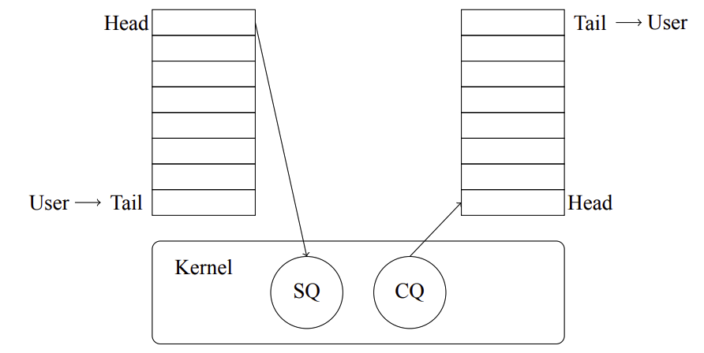
Coroutine: suspendable and resumable Function
Coroutines are functions that allow execution to be suspended and resumed.
- A coroutine is a function that can suspend execution to be resumed later.
- It allows handle non-blocking I/O without explicit callbacks.
- Advantages over threads: Lower context-switching overhead.
- Disadvantages over threads: Inability to utilize multi-core CPU, cannot execute concurrently.
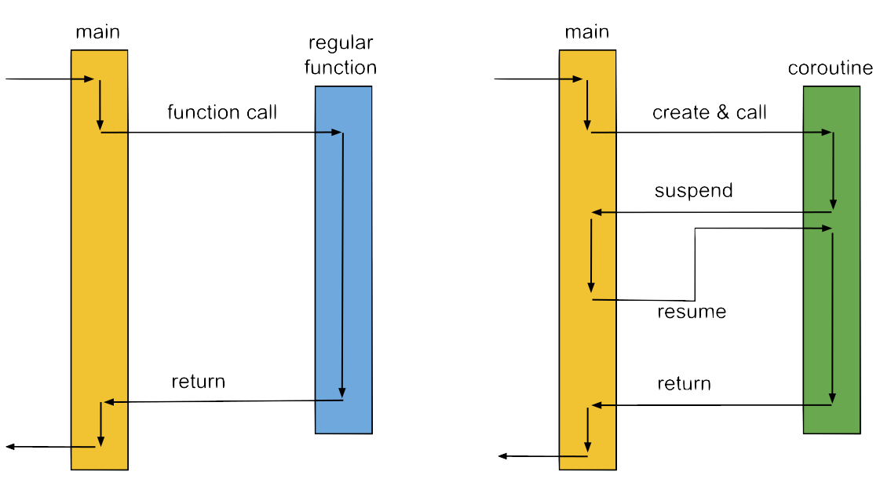
reference
Research Objectives
The goal is to design and implement a high-performance programming framework similar to OpenMPI but with distinct features based on Linux io_uring and Coroutines.
Commonalities with OpenMPI:
- Aim to enhance system performance.
- Applicable to system where multiple tasks are executed concurrently.
Differences from OpenMPI:
- It's designed for I/O-intensive tasks while OpenMPI is designed for compute-intensive tasks.
- It's based on asynchronous coroutines while OpenMPI is based on inter-process communication.
- It typically manages concurrency within a single computer while OpenMPI is primarily used across multiple computers or compute nodes.
Literature Review
There are some relevant literature:
- Understanding modern storage APIs: a systematic study of libaio, SPDK, and io_uring
- Comparative Evaluation of Asynchronous IO Interface between io_uring and libaio implemented in a NoSQL DB for SSDs
- Use Coroutines for Asynchronous I/O to Hide I/O Latencies and Maximize the Read Bandwidth
- Evaluating Asynchronous Parallel I/O on HPC Systems
Architectural Design
IoUring
Waiting Queue
Executor
Task
Create task
Architectural Design
IoUring
Waiting Queue
Executor
Task
Submit I/O Request
Architectural Design
IoUring
Waiting Queue
Executor
Task
Push
Architectural Design
IoUring
Waiting Queue
Executor
Task
Complete
Architectural Design
IoUring
Waiting Queue
Executor
Task
Pop
Architectural Design
IoUring
Waiting Queue
Executor
Task
Execute
Architectural Design
IoUring
Waiting Queue
Executor
Task
Finish
Architectural Design
IoUring
Waiting Queue
Executor
Task
If reach next I/O...
Architectural Design
IoUring
Waiting Queue
Executor
Task
Suspend the task
Architectural Design
IoUring
Waiting Queue
Executor
Task
Repeat
多核架构设计
- 参考Thread-Per-Core架构设计；
- 为每个核创建一个io_uring实例；
- 在同一个io_uring实例注册的Task只能在同一个核上运行；
- 设计目的是减少核间数据同步和线程切换。
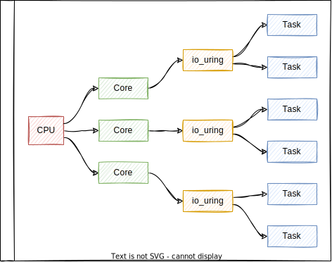
Task模块设计
- 基于面向对象的思想，将所有I/O操作统一抽象成Op类；
- 继承Op父类可派生出Op子类，每个Op子对象对应一个I/O操作；
- 一个Task由一个或多个Op子对象呈树状构成。
Task模块设计
- 一个Task对应一个协程；
- Task在执行过程中可以挂起和恢复；
- Task中的每个Op子对象对应为一个切换点；
- Task执行到切换点有两种状态：就绪和等待；
- 就绪状态下继续执行；
- 等待状态下挂起。
- Task恢复时从上次挂起的地方继续执行。
Task模块实现（Rust）
- Rust不支持面向对象编程，参考前端框架React的设计， 使用组件化的方式达到继承的效果；
- 子组件接口SubOp：创建I/O请求方法create_sqe；
- Future是Rust官方提供用于异步编程的接口；
- 为Op<T>实现Future接口：第一次执行调用子组件的create_sqe方法创建sqe， 然后注册到IoUring模块，接着挂起；恢复后（第二次调用）返回结果。
Task模块实现（Rust）
- Future对象具有组合性；
- 一个Op<T>对应一个叶子Future， 一个Task对应一个大Future，
- 通过Future的组合性将一个或多个Op<T>组合成一个Task；
- async/await：Rust编译器在语言层面为Future组合性提供的支持。
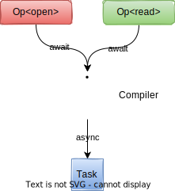
Rust实现中Task执行流程
Task模块实现（C++）
- C++20官方提供Promise和Awaitable两个接口用于协程编程；
- Promise：作为协程的函数返回类型必须实现Promise接口；
- Awaitable：类似于Rust中的Future接口，表示一个将来值。
- Task实现过程：
- 定义Task类，并为其实现Promise接口；
- 定义Op<T>类，并为其实现Awaitable接口，实现思路和在Rust中实现Future接口类似；
- 通过重写create_sqe方法派生Op子类。
Task模块实现（C++）
- Awaitable对象具有传递性；
- 一个Op<T>对应一个Awaitable对象， 多个Op<T>可以在一个Task内部传递；
- 通过Awaitable的传递性将一个或多个Op<T>组合成一个Task；
- co_await/co_return：C++20编译器在语言层面为Awaitable传递性提供的支持。

C++实现中Task执行流程
其他模块：...
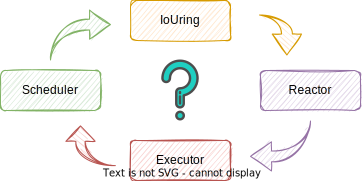
Emma（Rust）和Kuro（C++）
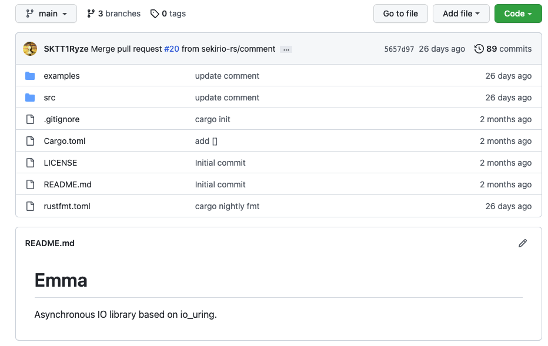

性能测试
- 测试对象：Emma，Kuro和以下框架；
- Tokio：最成熟的Rust异步运行时；
- async-std：Rust异步运行时新起之秀；
- Go：Go语言原生协程框架;
- Sync：同步I/O和多线程框架。
- 测试方法：用各个框架实现一个HTTP服务器，然后使用Apache Benchmark软件对服务器进行压力测试，并对比测试结果；
- 测试指标：服务器吞吐量；
- 测试环境：
- CPU：Intel(R) Xeon(R) Gold 5117 CPU @ 2.00GHz，56核；
- 内存：32GB，2666 MT/s x 16（条）；
- 网卡：Intel Corporation Ethernet Connection X722 for 10GbE SFP+ (rev 09)。

测试结果
- 横坐标是HTTP请求数，纵坐标是服务器吞吐量；
- 随着请求数增大，服务器吞吐量趋于一个恒定值；
- Emma和Kuro框架的吞吐量最高，Go框架的吞吐量最低；
- Kuro框架比同步I/O和多线程框架在吞吐量指标上最高能达到78%的提升。
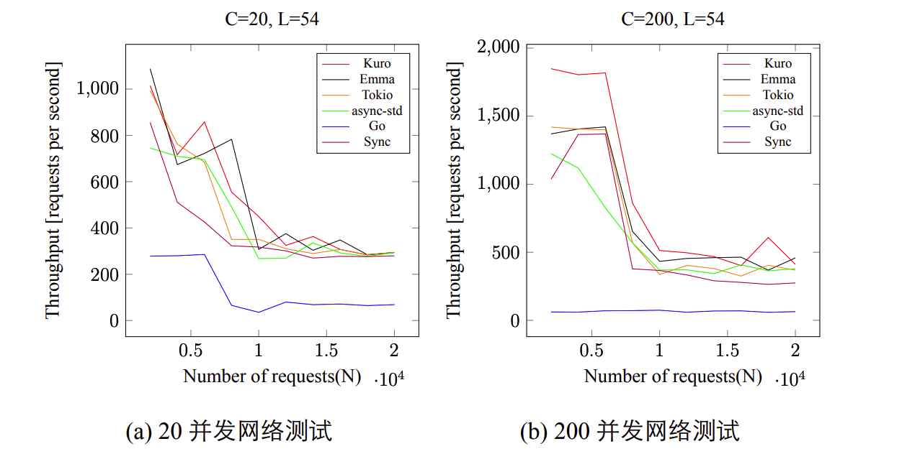
总结与展望
- 基于Linux平台上的异步I/O技术（io_uring）和Rust/C++语言的协程技术设计并实现了两款 异步编程框架Emma和Kuro，在给上层应用开发带来便利的同时，验证了异步I/O和协程 的高效性；
- 后续计划可以从丰富功能和规范测试两个方面入手：
- 为Emma和Kuro框架适配io_uring的高级用法，实现更多功能；
- 搭建更加规范，完善的测试环境，得出更准确，更全面的测试结果。
毕设成果为本PPT的演示提供支持！